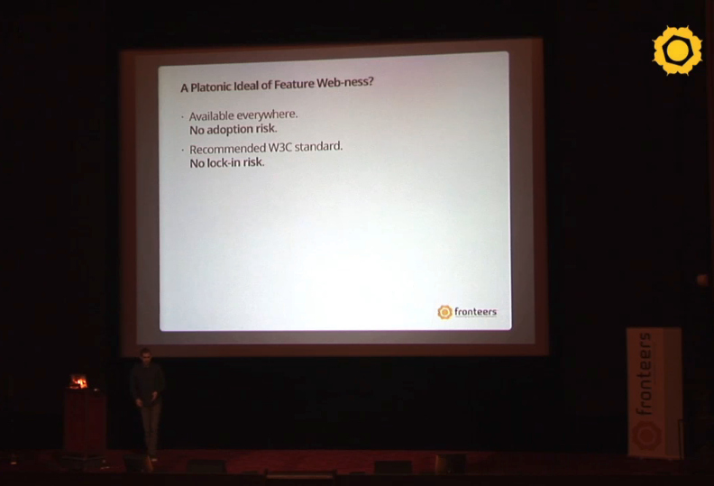
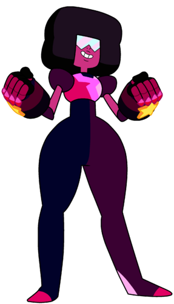

Web Components
It's about time.
Allow you to create new HTML elements that are
- Custom
- Reusable
- Encapsulated

Back in 2011, Alex Russell presented a proposal for web components (and some other stuff)
at Fronteers in Holland. You can watch it here, if you want.
Talks about reasons for web components
It's... long.
And, really, the proposal didn't get much traction when it was first presented.

https://fronteers.nl/congres/2011/sessions/web-components-and-model-driven-views-alex-russell
Some important things have changed since 2011
Everything is components now
Web components aren't really a replacement for your framework components
There are still a couple of things that frameworks do better
Hello, {{ name }}
Interpolation (with a differing number of curly braces depending on which framework you're using)
document.querySelector('#hello').textContent = `Hello, ${name}`
You can do it with web components, it's just a bit more involved, and you have to write a bit of JavaScript.
render()
You're also not going to get the automatic change detection you do in Angular & Vue,
or even the manual DOM updating that you get in React. You're basically going to need
to write your own render() function.
<MyAwesomeComponent config="configOptions" />
You also can't pass objects in as attributes like you could with a framework component
You can only pass strings
<app-root> <container-component> <presentation-component> <div> <label></label> <input /> </div> </presentation-component> <presentation-component> </presentation-component> </container-component> </app-root>
HTML Templates

- Create a reusable template using
<template></template> - Clone the template
- Attach the clone to the DOM
Demo!
explanation of IE and opera mini
- Custom
- Reusable
- Encapsulated

credit for Garnet picture
Actually, you're probably already familiar with shadow DOM
Can change width and height, but only to squares
Can't change pretty much anything else at all
Behaves differently in different browsers (show if time)
checkbox has shield that allows it to repel our CSS
steven with shield repelling attack
show that we can't target it with js or css
so this is nice and all, but it only works if you build all your DOM in JavaScript
wouldn't it be great if there was a way to combine shadow DOM with HTML
const template = document.getElementById('buy-template');
const items = document.querySelectorAll('.item');
items.forEach((item) => {
const clone = document.importNode(template.content, true);
const shadow = item.attachShadow({ mode: 'open' });
shadow.appendChild(clone);
});
but it gets better! new ability unlocked! html slots
something else you've seen before
shadow dom + you can pass things into it!
<div class="item">
<div class="picture">
<img src="images/donut.png" />
</div>
<h2>Donut</h2>
<div class="description">
Exactly what you'd expect at a donut shop
</div>
<div class="buy">
<label>
<span>How many?</span>
<input type="number" />
</label>
<button>Buy</button>
</div>
</div>
<div class="item">
<div class="picture">
<img src="???.png" />
</div>
<h2>???</h2>
<div class="description">
???
</div>
<div class="buy">
<label>
<span>How many?</span>
<input type="number" />
</label>
<button>Buy</button>
</div>
</div>
Wouldn't it be great if we could create a template with holes in it that we could fill in later
description
class MyElement extends HTMLElement {
constructor() {
super();
console.log('custom element created')
}
}
customElements.define('my-element', MyElement)